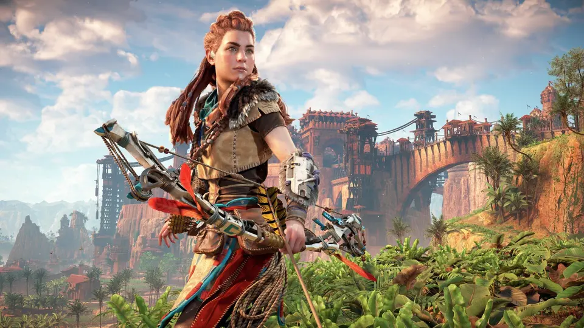

Yama durumu
Bu oyun için Türkçe yama dosyası henüz eklenmedi. Doğrulanmış bir paket gelince bilgiler burada paylaşılacak.
Horizon Zero Dawn için yama vitrini.

Bu oyun için Türkçe yama dosyası henüz eklenmedi. Doğrulanmış bir paket gelince bilgiler burada paylaşılacak.
Türkçe yama yakında eklenecek. Şu anda indirme bağlantısı yok.
Dosya, oyun sürümü ve uyumluluk bilgileri doğrulanınca güncellenecek.
Yama dosyası eklendiğinde kurulum adımları burada paylaşılacak.
Bu topluluk sayfası resmi oyun yayımcısına ait değildir.